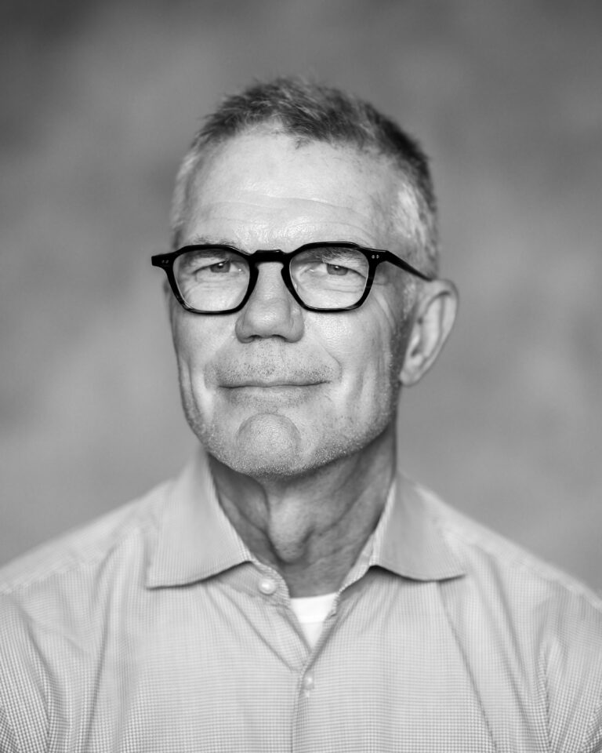

Making a Difference
For nearly 30 years, Adanu has worked with communities across Ghana to build schools, train leaders, and create lasting change. Among the many who shaped this mission, Clint Morse stands out for his heart, vision, and dedication. Through his partnership with Adanu - and the support of the Morse family and the Mosaic Company - over 30 communities have gained new schools, libraries, and clean water systems.
